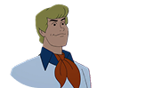

Fred
Jones

É o líder autoproclamado da Mistério S/A, famoso pela sua coragem, otimismo e pela obsessão em construir armadilhas elaboradas para capturar os vilões. Sempre ao volante da Máquina do Mistério, ele costuma ser quem divide a turma para procurar pistas. No original em inglês, o seu nome completo é Frederick Herman Jones.